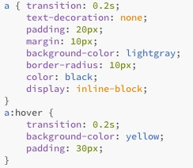

Teaching Point:
Today we will learn how to add Transitions to our web page buttons.
CSS Transitions
Transitions are one of the most fun things in web design. Transition means to change, and that is what CSS transitions do, they make HTML elements change when you click on them or move your mouse over them. You can choose how you want your HTML element to change, and how long you want it to take. All that you have to do is set a special rule for when the mouse is over the Element, and type how long you want the change to happen for. To do this.
- Set a new css rule called a:hover. This rule will happen when your mouse hovers over your button.
- Write "transition: " and the amount of time you want it to take measured in seconds. So for 0.5 seconds I would write "transiton: 0.5s;". For 2 seconds I would write "transition: 2s;
- Write the thing that you want to change using the same CSS that we have been using this whole time. (like color, background-color, margin, width, etc.)
Here is an example.
Today's Assignment
Use Transitions in CSS to make your buttons change when the mouse hovers over them. Use classes to make different buttons do different things.
Back to School Portal